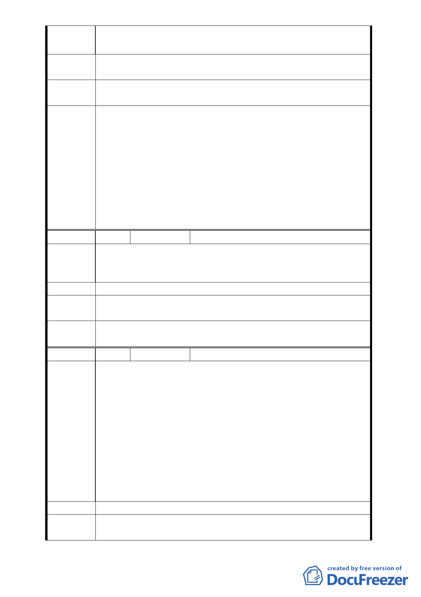

陳情理由
市民大道引道不應接至忠孝東路四段 553 巷，此巷無法負
荷大流量的交通。
建議辦法
1.
2.
建議由松菸地下引道至逸仙路。
建議文化園區、體育園區應一併統籌規劃。
專案小組
審查結論
同編號 2
1.因應未來文化體育園區整體開發計畫之交通規劃，本案維持
公展計畫書所提變更第三種工業區為道路用地的範圍，即案
內除專案小組結論同意變更之東西向道路外，往北連通市民
委員會決 大道之道路仍予維持變更第三種工業區為道路用地。
議 2.案內東西向道路維持專案小組結論東側不予連通忠孝東路四
段553巷。
3.本案變更為道路用地範圍為避免畸零地產生，依臺北市瑠公
農田水利會所提意見，納入該會所有信義區逸仙段二小段 35-1
地號整筆土地。
編 號6
陳情人 吳汪憲英
1. 我為該區住戶，該區目前常有車禍發生，空氣又不好，車已
陳情理由 很多。
2. 該道路直接銜接 553 巷將使該區交通更惡化。
建議辦法 建議該道路不要經過553巷。
專案小組
審查結論
同編號 2
委員會決
議
同編號 1
編 號7
陳情人 邱明華
1. 應設法拓寬 553 巷車道，例如人行道改單邊，刑事警察局或
聯合報騎樓退縮。
2. 週邊巷道一併整理，例如 16 弄巷口建築物擋道，能否有解
決對策？
3. 刑事局內設大型車迴車空間，以免有時 SNG 或巴士出入塞
陳情理由 道（如最終結果不能管制大型車出入）。
4. 553 巷太窄，應管控大型車出入。
5. 基隆路交通請一併考量。
6. 553／559 巷考慮單巷行駛？忠孝東路幹線交通號誌配合施
工？
7. 希望有路可通京華城，但生活干擾力求減少。
建議辦法
－
專案小組
審查結論
同編號 2
- 11 -